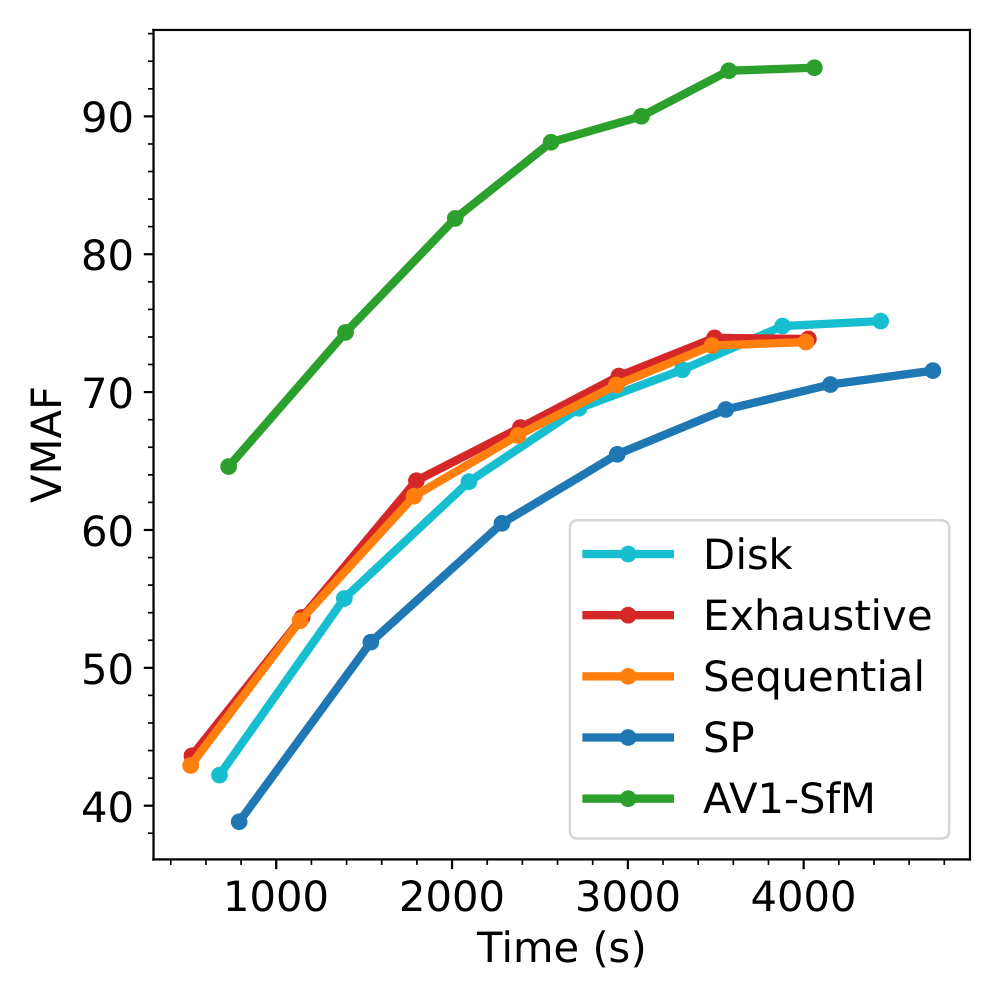
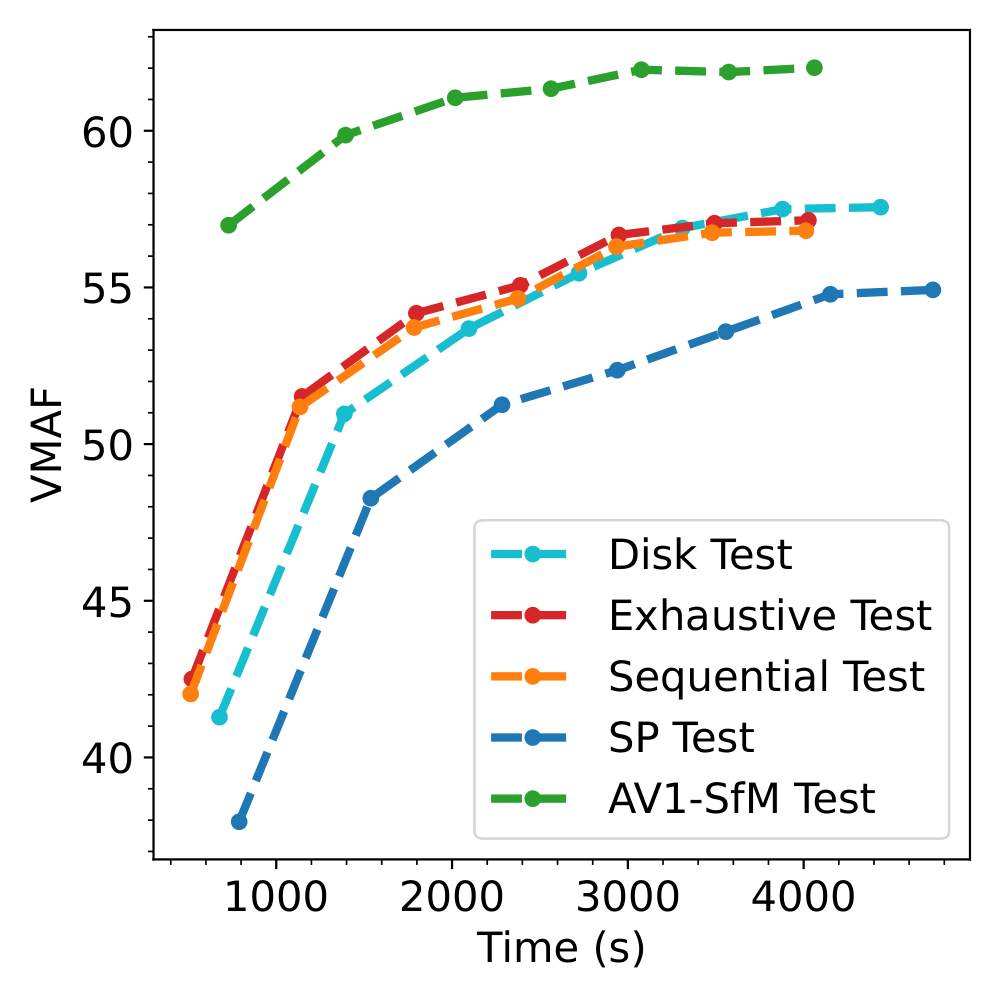
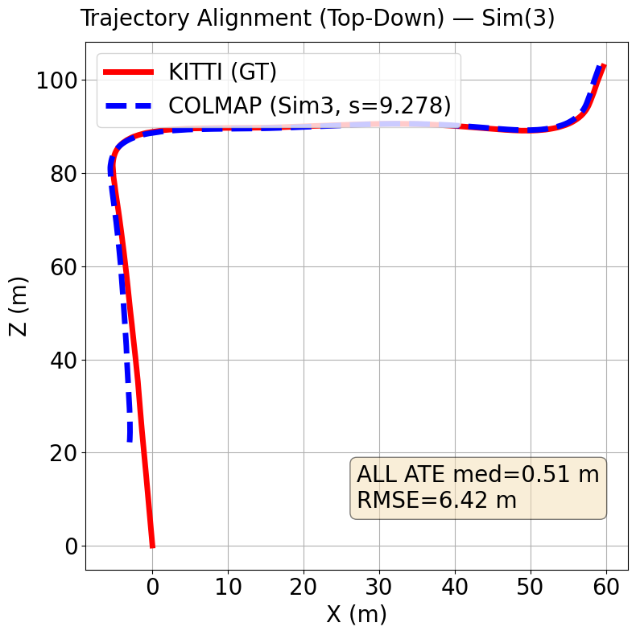
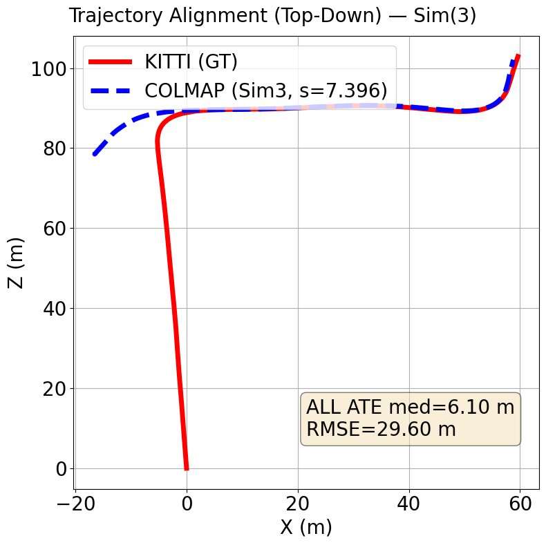
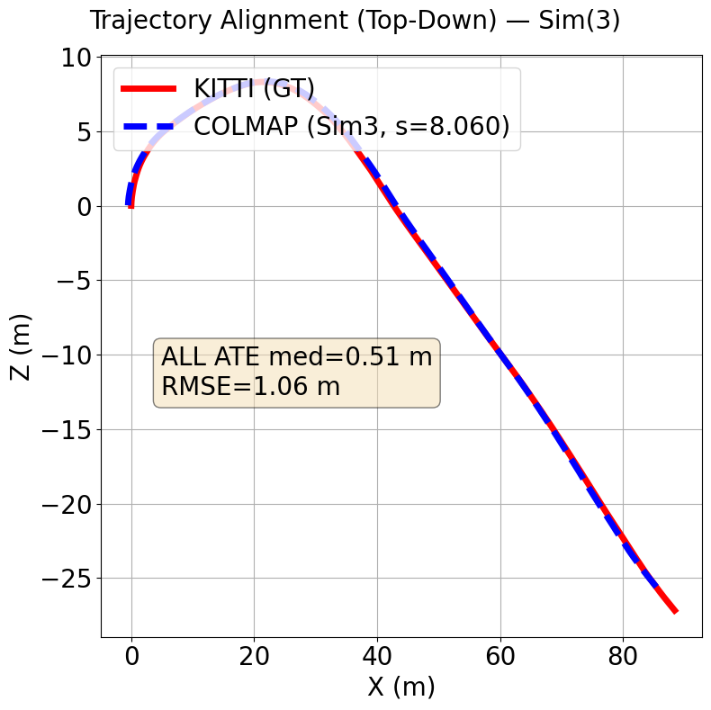
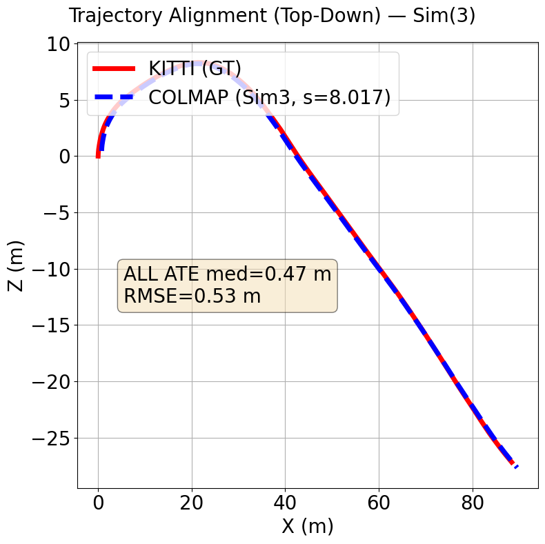

Convergence and Geometric Debt
A primary contribution of this work is the marked improvement in convergence efficiency.
In standard 3DGS workflows, the optimiser spends thousands of iterations generating new
Gaussians to fill the structural voids left by sparse SfM. By providing high-density
initialisation at the start, AV1-SfM allows the GPU to focus its computational budget on
refining colour and covariance parameters immediately. This results in a 63% reduction
in the total training time required to reach baseline quality (averaged over all sequences).
The graphs below, show the evolution of VMAF value during training for both Train and Test data from the Nature Sequence.
We can see that our result (in Green) has a headstart compared to the other techniques and reaches values way higher than the baseline (in Red) at the same iteration.

VMAF value during training on Train Data for Nature.
VMAF value during training on Test Data for Nature.3D Point Clouds Comparison
The proposed AV1-SfM framework aims to bridge the gap between sparse feature matching and dense reconstruction by leveraging motion vectors inherent to the AV1 bitstreams. As the evaluation sequences consist primarily of User Generated Content (UGC), ground truth 3D reconstructions are unavailable. Consequently, point clouds generated via SIFT keypoints with exhaustive matching—the default pipeline for COLMAP and 3D Gaussian Splatting—serve as the baseline for comparison.
3D reconstruction Fidelity
We adopt two standard point-cloud distances to quantify reconstruction quality, computed between each method and the baseline (SIFT + Exhaustive Matching).
With $P_1=\{x_i\}_{i=1}^{n}$ and $P_2=\{x_j\}_{j=1}^{m}$:
\begin{equation}
\begin{aligned}
\textstyle CD(P_1,P_2)
&= \frac{1}{2n}\sum_{i=1}^{n}\min_{b\in P_{2}}\|x_{i}-b\| \\
&\quad + \frac{1}{2m}\sum_{j=1}^{m}\min_{a\in P_{1}}\|x_{j}-a\| .
\end{aligned}
\end{equation}
\begin{equation}
\begin{aligned}
\textstyle HD(P_1,P_2)
&= \tfrac{1}{2}\Big( \max_{a\in P_{1}}\min_{b\in P_{2}}\|a-b\| \\
&\quad + \max_{b\in P_{2}}\min_{a\in P_{1}}\|b-a\| \Big).
\end{aligned}
\end{equation}
The Chamfer distance reflects overall shape similarity; the Hausdorff distance captures the worst-case discrepancy between point clouds. Additionally, we record the
mean reprojection error reported by COLMAP (average residual in pixels) as a measure of self-consistency.
The results are shown in the table below.
Density and geometric consistency
he most significant result in the Table above is the massive increase in point density provided by AV1-SfM. On average,
our method generates 14 times more 3D points than the Exhaustive baseline. For instance, in Boston Vid 1, AV1-SfM produces 1.7M points, whereas the baseline yields only 54k.
Crucially, this density does not come at the cost of accuracy. Our method achieves the lowest Mean Reprojection Error (MRE) in a majority of the sequences (e.g., 0.36 for Boston Vid 1 vs. 0.81 for Exhaustive).
Maintaining a sub-pixel MRE while scaling the point count by an order of magnitude demonstrates that the motion vectors extracted from the AV1 bitstream provide highly reliable correspondence for dense reconstruction.
Comparison of Structure from Motion methods across reconstructed 3D point clouds. The proposed AV1-SfM generates denser point clouds and despite the order-of-magnitude difference in point count, overall accuracy is similar.
| Sequence | Metric | Exhaustive | Sequential | SP | Disk | AV1-SfM (ours) |
|---|---|---|---|---|---|---|
| Boston Vid 1 | #3D points | 54k | 52k | 11k | 19k | 1.7M |
| Mean Reproj Error | 0.81 | 0.77 | 1.61 | 1.18 | 0.36 | |
| Chamfer distance | 0.00 | 8.93 | 6.93 | 6.32 | 0.34 | |
| Hausdorff distance | 0.00 | 7.25 | 6.19 | 6.13 | 1.78 | |
| Dublin Seq 1 | #3D points | 47k | 40k | 23k | 64k | 406k |
| Mean Reproj Error | 0.76 | 0.67 | 1.46 | 1.33 | 0.62 | |
| Chamfer distance | 0.00 | 0.23 | 0.32 | 0.58 | 0.57 | |
| Hausdorff distance | 0.00 | 35.26 | 30.87 | 25.54 | 34.99 | |
| Kitti Seq 00 | #3D points | 59k | 54k | 24k | 89k | 566k |
| Mean Reproj Error | 0.42 | 0.38 | 1.17 | 0.96 | 0.65 | |
| Chamfer distance | 0.00 | 2.49 | 2.80 | 1.28 | 2.26 | |
| Hausdorff distance | 0.00 | 101.50 | 73.19 | 118.40 | 125.78 | |
| Kitti Seq 10 | #3D points | 32k | 27k | 9k | 60k | 324k |
| Mean Reproj Error | 0.37 | 0.35 | 1.06 | 0.96 | 0.63 | |
| Chamfer distance | 0.00 | 1.97 | 0.65 | 2.61 | 3.24 | |
| Hausdorff distance | 0.00 | 57.48 | 42.42 | 68.05 | 75.48 | |
| Nature | #3D points | 46k | 43k | 33k | 53k | 755k |
| Mean Reproj Error | 1.10 | 1.07 | 1.50 | 1.40 | 0.89 | |
| Chamfer distance | 0.00 | 0.09 | 0.32 | 0.73 | 0.30 | |
| Hausdorff distance | 0.00 | 61.17 | 55.92 | 60.14 | 58.50 | |
| Paris Seq 1 | #3D points | 48k | 45k | 29k | 86k | 621k |
| Mean Reproj Error | 0.56 | 0.53 | 1.35 | 1.07 | 0.51 | |
| Chamfer distance | 0.00 | 2.69 | 2.78 | 3.03 | 2.94 | |
| Hausdorff distance | 0.00 | 30.26 | 74.84 | 86.76 | 29.97 | |
| Paris Seq 2 | #3D points | 61k | 55k | 34k | 70k | 425k |
| Mean Reproj Error | 0.68 | 0.63 | 1.39 | 1.27 | 0.69 | |
| Chamfer distance | 0.00 | 1.39 | 2.70 | 2.78 | 2.79 | |
| Hausdorff distance | 0.00 | 33.77 | 43.96 | 61.91 | 53.24 |
The ``Hausdorff Paradox'' and Baseline Failures
V1-SfM occasionally reports higher Chamfer and Hausdorff distances relative to the Exhaustive baseline (e.g., Kitti Seq 00). However, a qualitative cross-reference with an analysis of rendered 3D points clouds reveals that this is a metric artifact caused by baseline failure. The Exhaustive method fails to reconstruct significant portions of the scene in Kitti Seq 00 and Paris Seq 2. Because the Exhaustive reconstruction is used as the ``ground truth'' for the distance metrics, AV1-SfM is statistically penalised for reconstructing geometry that the baseline missed entirely.
Camera trajectory evaluation
To assess the accuracy of our reconstructed camera poses, we compute the Absolute Trajectory Error (ATE) between our estimated camera trajectory and a reference trajectory. ATE measures the translational error between
corresponding camera positions in the two trajectories after aligning them with a similarity transformation (rotation, translation, and scale). We report both the median ATE and Root Mean Square Error (RMSE) across all
camera positions. The median provides a robust measure of central tendency that is less sensitive to outliers than the mean, whilst RMSE penalises larger errors more heavily and gives a comprehensive view of the overall
trajectory accuracy. This evaluation is particularly important for applications such as autonomous navigation or augmented reality, where accurate camera localisation is crucial. We compute ATE using the standard evaluation
tools, first aligning the trajectories with a 7-degree-of-freedom transformation, then computing the distance between corresponding camera centers.
Because monocular SfM has unknown global scale, we first perform a single global 7-DoF Sim(3) alignment (Umeyama) between estimated camera centers and KITTI ground truth, applied once per sequence and identically to all methods.
The similarity $(s,R,t)$ is estimated with a 3-point RANSAC wrapper around Umeyama (threshold $\tau=1.0$\,m), using paired camera centers ($C=-R_{wc}^\top t_{wc}$ for COLMAP; the translation column for KITTI).
the proposed method has a median Absolute Trajectory Error (ATE) of 0.51 meters while baseline has a median ATE of 3.3 meters over both sequences. Baseline has a RMSE of 15.07 meters while the proposed method has a RMSE of 3.74 over both sequences.
The Figures below show trajectories for our method (AV1 SfM) on top compared to baseline (SIFT + Exhaustive matching) on the bottom.
Kitti Seq 00 (Ours)

Kitti Seq 00 (Baseline)

Kitti Seq 10 (Ours)

Kitti Seq 10 (Baseline)

Acknowledgments and Funding


This work was funded by the Horizon CL4 2022, EU Project Emerald, 101119800; and YouTube & Google Faculty Awards.
References
[Tyszkiewicz 2020] Michał Tyszkiewicz, Pascal Fua, and Eduard Trulls, “Disk: Learning local features with policy gradient,” Advances in neural information processing systems, vol. 33, pp. 14254–14265, 2020.
[Lindenberger 2023] Philipp Lindenberger, Paul-Edouard Sarlin, and Marc Pollefeys, “Lightglue: Local feature matching at lightspeed,” in Proceedings of the IEEE/CVF international conference on computer vision, 2023, pp. 17627–17638.
[DeTone 2018] Daniel DeTone, Tomasz Malisiewicz, and Andrew Rabinovich, “Superpoint: Self-supervised interest point detection and description,” in Proceedings of the IEEE Conference on Computer Vision and Pattern Recognition (CVPR) Workshops, 2018.
[Sarlin 2020] Paul-Edouard Sarlin, Daniel DeTone, Tomasz Malisiewicz, and Andrew Rabinovich, “Superglue: Learning feature matching with graph neural networks,” in Proceedings of the IEEE/CVF Conference on Computer Vision and Pattern Recognition (CVPR), 2020.
[Schonberger 2016] Johannes Lutz Schonberger and Jan-Michael Frahm, “Structure-from-motion revisited,” in Conference on Computer Vision and Pattern Recognition, 2016.